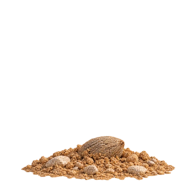
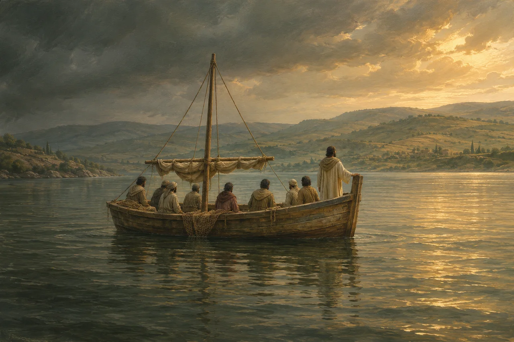

Dein Glaubensweg
Dein Olivenbaum erinnert dich an das, was du entdeckst.

Schön, dass du da bist.
Lies Gottes Wort. Entdecke, was es für dein Leben bedeutet. Halte deine Gedanken fest und sieh, wie dein persönlicher Weg wächst.
Dein Olivenbaum erinnert dich an das, was du entdeckst.

Ein Wort für deinen Tag
Ein Psalm Davids. Der HERR ist mein Hirte; mir wird nichts mangeln.
Schritt 1 von 3

Lies in der Bibel und finde Worte, die dich durch deinen Alltag begleiten.
Schritt 2 von 3
Nimm dir Zeit für Fragen, Gebete und das, was dich persönlich bewegt.
Schritt 3 von 3
Dein Olivenbaum begleitet dich. Deine Gedanken und Erfahrungen bleiben Teil deiner Geschichte.
Lesen
Luther 1912
35 Und an demselben Tage des Abends sprach er zu ihnen: Laßt uns hinüberfahren.
36 Und sie ließen das Volk gehen und nahmen ihn, wie er im Schiff war; und es waren mehr Schiffe bei ihm.
37 Und es erhob sich ein großer Windwirbel und warf Wellen in das Schiff, also daß das Schiff voll ward.
38 Und er war hinten auf dem Schiff und schlief auf einem Kissen. Und sie weckten ihn auf und sprachen zu ihm: Meister, fragst du nichts darnach, daß wir verderben?
39 Und er stand auf und bedrohte den Wind und sprach zu dem Meer: Schweig und verstumme! Und der Wind legte sich, und es ward eine große Stille.
40 Und er sprach zu ihnen: Wie seid ihr so furchtsam? Wie, daß ihr keinen Glauben habt?
41 Und sie fürchteten sich sehr und sprachen untereinander: Wer ist der? denn Wind und Meer sind ihm gehorsam.
Bibeltext · eBible.org · gemeinfrei
Luther 1912
Ein Psalm Davids. Der HERR ist mein Hirte; mir wird nichts mangeln.
Zum Bibelabschnitt
Was bewegt dich an der Frage: „Kümmert es dich nicht?“
Deine Antwort ist freiwillig.
Die erste Zeile wird zum Titel.
Dein Baum erinnert dich an das, was du entdeckst.
Ich übe, Menschen ruhig und freundlich zuzuhören.
Ich übe, Menschen ruhig und freundlich zuzuhören.
Begegne dem Menschen, der Hoffnung schenkt.
Markus 4,35–41